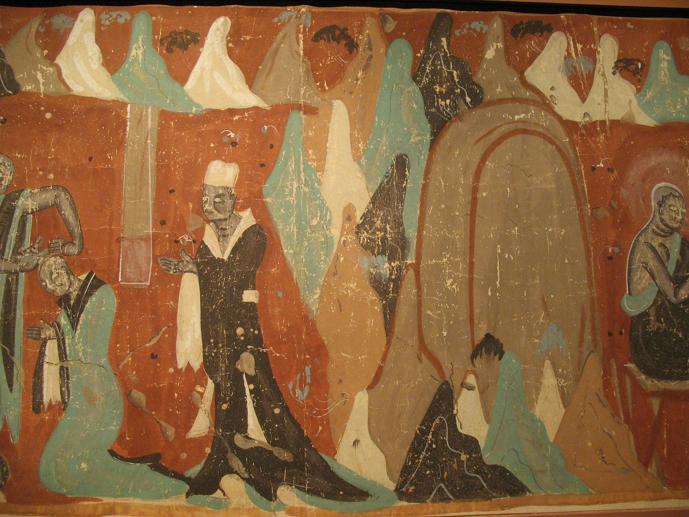

文章分類 > 菩提心 >吝法 吝法 淨空法師  自己有能力、有學術，不肯教導別人，就是吝法，生生世世得愚痴果報。 玄奘大師在印度留學時講經說法，印度這些大國王都喜歡聽，都希望留住玄奘大師在當地弘法利生。但玄奘大師說，我到印度來的目的，是為東土大唐苦難的眾生求取佛法，是使命而到印度來。你們留住我不讓我回去，使佛法不能普及到東土，你們將來生生世世得愚痴果報。於是當時印度的那些國王，都幫助玄奘大師順利的回國。 資料來源